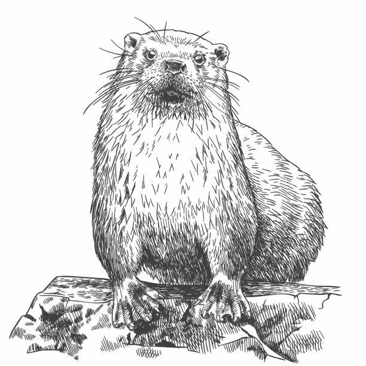

Index

Navigation
1.
Introduction
2.
Fetching the 7T-fMRI retintotopy dataset
3.
Grouping V1, V2, and V3 data into foveal and para-foveal quarter-fields
4.
Modeling the propagation of BOLD activity across V1, V2 and V3 with a noise diffusion network
5.
Common underlying structure in Effective Connectivity
6.
Rebalancing in foveal and para-foveal responses across tasks
7.
Discussion and Conclusion
Related Topics
Documentation overview
Quick search